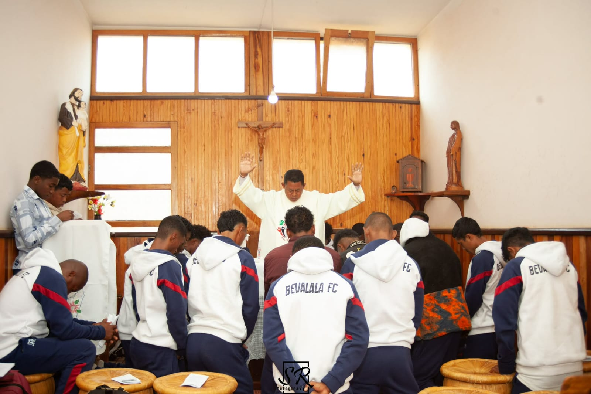
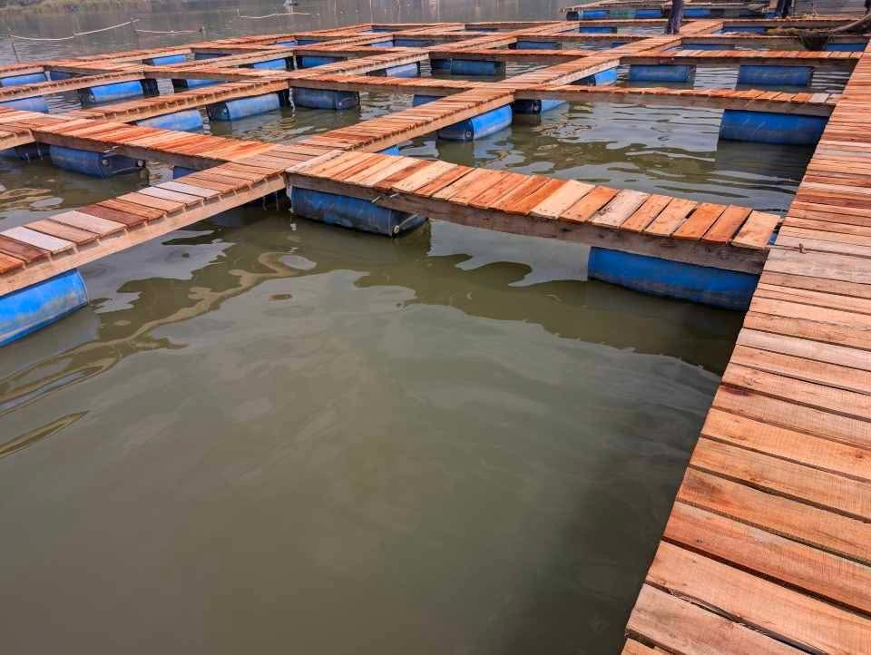

Découvrez l'histoire et les valeurs du BEVALALA FC.

BEVALALA FC a été inauguré le 19 Janvier 2021. Nous sommes reconnus au niveau de l’Association Sportive d’Antananarivo Atsimondrano et avons obtenu le Certificat de conformité le 05 Février 2024.
Ici à Bevalala, on a beaucoup de jeunes qui ont de talent et qui veulent s’intégrer dans notre club. En vue de préparer aussi des relèves pour le club, nous avons le projet d’ériger un BEVALALA FC catégorie junior.
Nous voulons que les jeunes s’épanouissent dans leur talent. Notre objectif est de pousser ces jeunes à aller loin autant qu’ils peuvent, qu’ils ne se contentent pas seulement à des compétitions locales, mais aussi à des compétitions nationales et même internationales. Notre but est d’aider ces jeunes à ne pas se verser aux drogues. Notre objectif final découle de la Préférence Apostolique de la Compagnie de Jésus: « Accompagner les jeunes pour bâtir un avenir meilleur » et avec l’esprit MAGIS.

Le sport est un espace permettant d’éduquer les jeunes et de développer les talents qu’ils possèdent. Constatant que de nombreux jeunes autour de nous sont talentueux et passionnés de football, le Bevalala FC est né et vient tout récemment de célébrer ses cinq ans d’existence. À ce jour, le club a déjà participé à trois reprises au championnat national Ligue 1 Analamanga et pour la deuxième fois à la compétition Yas Coupe de Madagascar.
On constate cependant que, dans le pays, l’éducation par le sport n’est pas encore une priorité pour toutes les structures. Bien souvent, seuls les enfants de familles aisées ont la possibilité d’exploiter leur talent au sein de clubs solides. On remarque aussi que, face aux difficultés de la vie, de nombreux jeunes se tournent vers le sport en rêvant d’aller loin. On considère alors que la seule voie permettant aux recruteurs d’observer les joueurs est la participation aux compétitions locales de LIGUE et de PROLIGUE.
Mais cela ne va pas de soi : il faut des moyens financiers, il faut des partenaires, alors qu’il est difficile de trouver chaque année des sponsors pour le club. La raison en est que, dans beaucoup de pays, le sport n’est pas encore une priorité, mais seulement une forme de loisir. Pour sa part, le Bevalala FC s’efforce d’offrir une formation complète aux jeunes et estime qu’il est possible de construire et de s’épanouir dans la solidarité à travers le sport. C’est pourquoi le club a décidé de mettre en place des activités génératrices de revenus afin d’assurer le déroulement de la saison et de couvrir son fonctionnement général. C’est l’objet de ce projet de poissons en cages flottantes. En quelques mois seulement, il permet déjà de récolter des produits, d’être rentable et de faire tourner plusieurs cycles. Ce document vous est envoyé afin de vous permettre d’aider le club Bevalala FC. Merci pour l’effort commun engagé en faveur des jeunes.
Ensemble, nous sommes plus forts.
La rigueur est la clé de la réussite.
Nous vivons chaque match avec passion.
Respecter nos adversaires et nos partenaires.